Your medicines, on time.
Dawa2 (دواء, “medicine”) rings a real full-screen alarm for every dose, and it keeps ringing until you answer: Taken, Snooze or Skip. Every answer goes into a private history on your phone, in English or Arabic.
- No account
- No cloud
- No ads
- Works offline
- English and Arabic
An alarm you can't miss
Most reminder apps send a notification that is easy to swipe away. Dawa2 uses a real alarm, and remembers what you did.
Keeps ringing until you answer
A full-screen alarm over the lock screen, and over other apps if you allow it. Touching the screen or opening the notification shade doesn't silence it: only Taken, Snooze or Skip do. It can also read the medicine aloud.
Rings through everything
Exact alarms ring through Doze, battery saver and restarts, and keep going even if you don't open the app for days. Unanswered doses ring once more.
Every kind of medicine
Tablets, capsules, syrups, drops, sprays, inhalers, injections, creams, patches and more, each with its own dose rules and safety notes, added in four short steps.
Schedules that fit your day
Every day or chosen weekdays, several times a day, with start and end dates. Pause for a few days or stop with a reason, without counting those days as missed.
Today and history
The next dose and a progress ring, a “Did you take it?” follow-up for unanswered alarms, a history log and insights. Dismissed is never counted as taken.
English and Arabic
Full right-to-left Arabic with correct plurals, Western digits so doses match the label, and light and dark themes with checked contrast, down to the alarm screen.
Several medicines at once
When doses are due together, one alarm screen lists them all, each with Taken, Snooze and Skip, plus “I've taken all” and “Snooze all”. It keeps ringing until every dose is answered, with a moment to undo.
Ready in a minute
On first launch Dawa2 walks you through the few Android permissions an alarm needs, and Today warns you if one gets turned off later, so a reminder never fails silently.
Your history, your choice
Export it as a spreadsheet (CSV), back up everything and restore it on a new phone, or remove doses from history: one, a period, or all of it. Only when you choose: nothing is ever sent anywhere.
A closer look
Ten screens from a real phone, in light and dark.
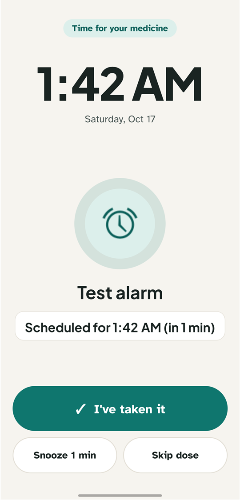
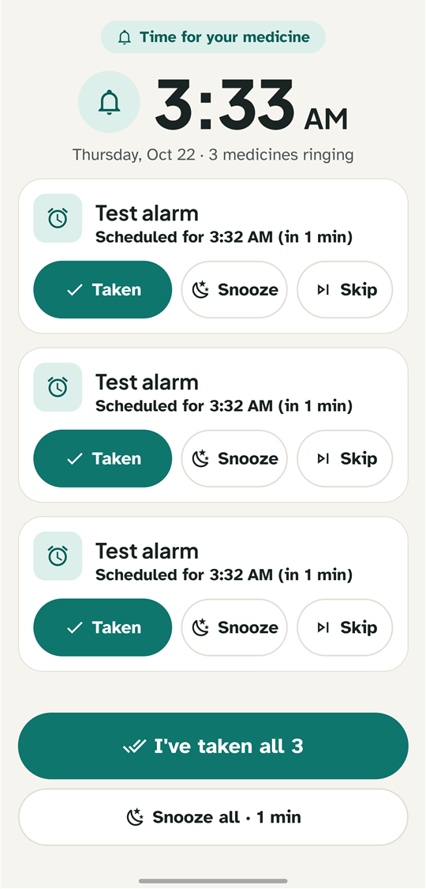
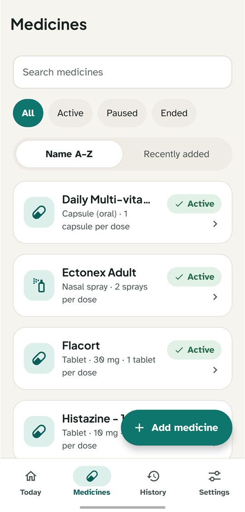
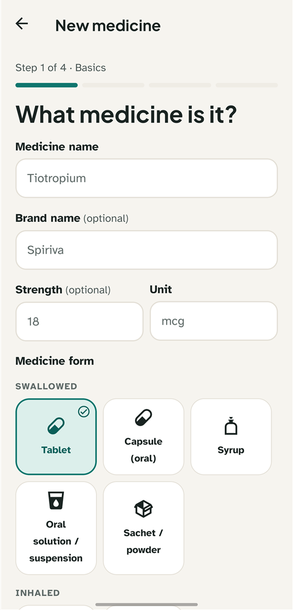
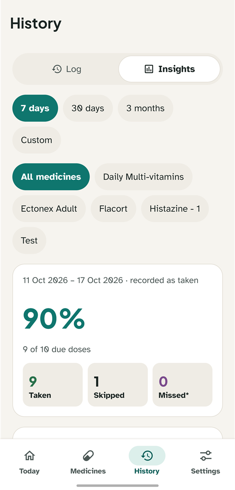
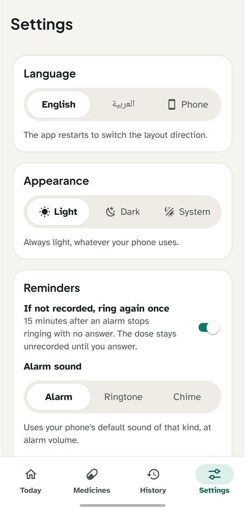
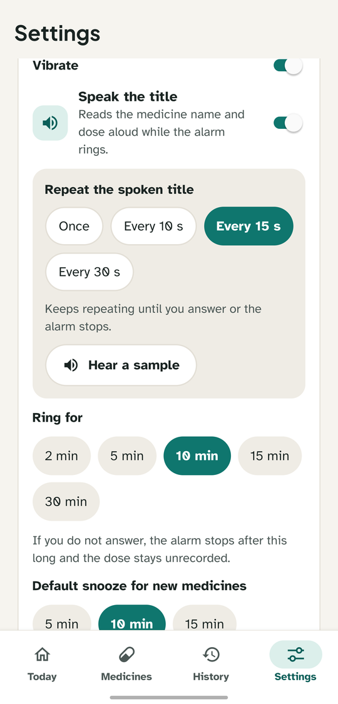
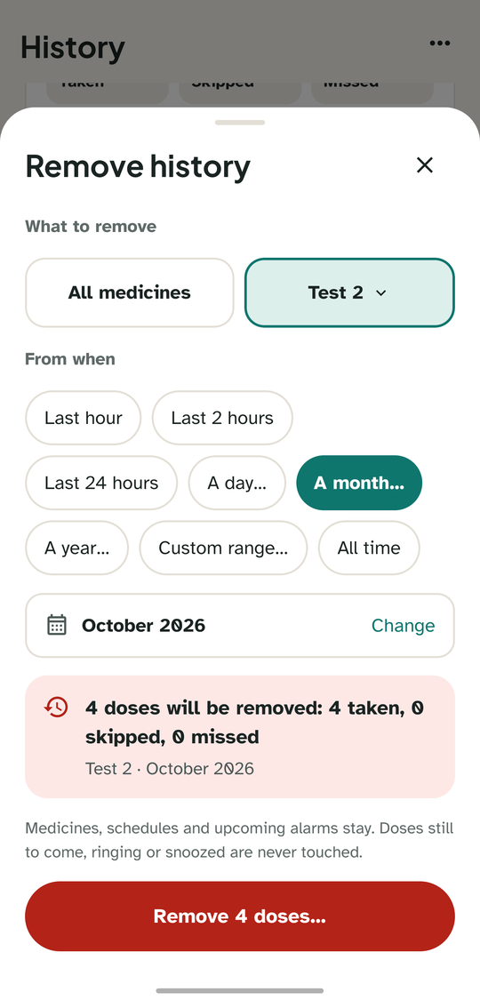
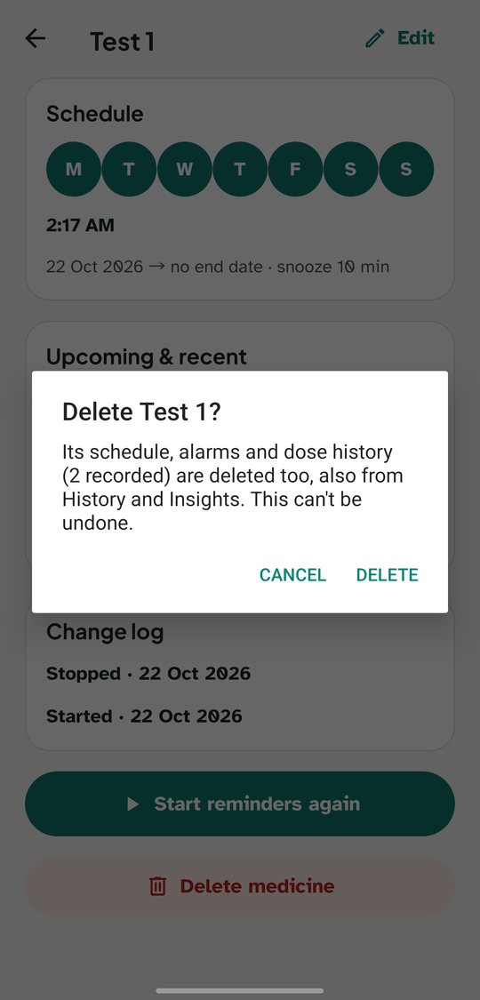
A guided first launch
Dawa2 shows how the alarm works and what stays private, then turns on each permission in one tap. If something stays off, it says so, and you can still continue.
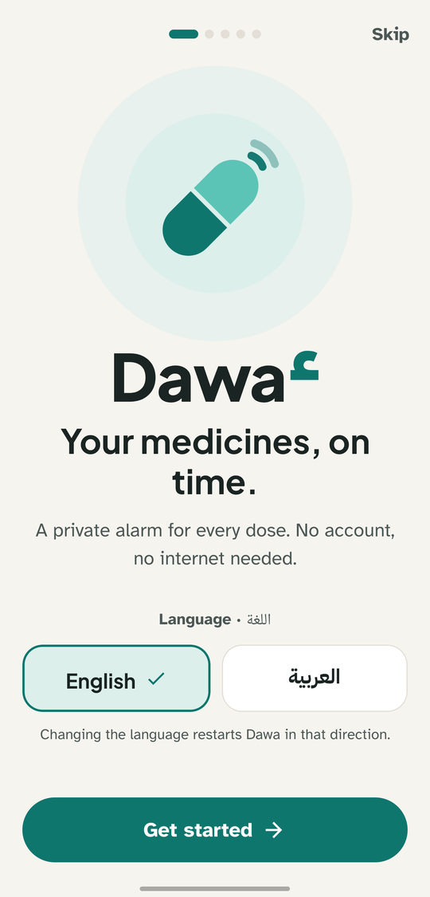
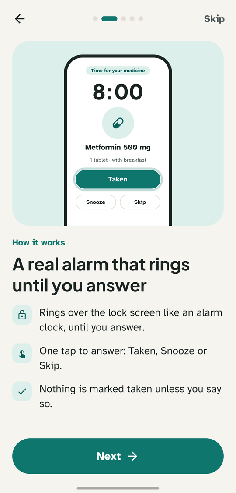
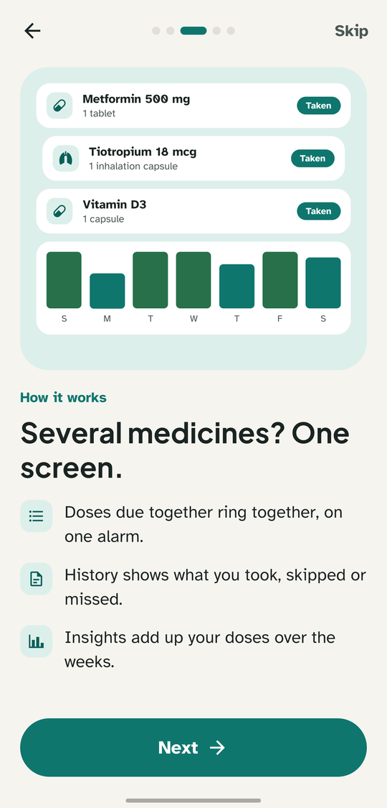
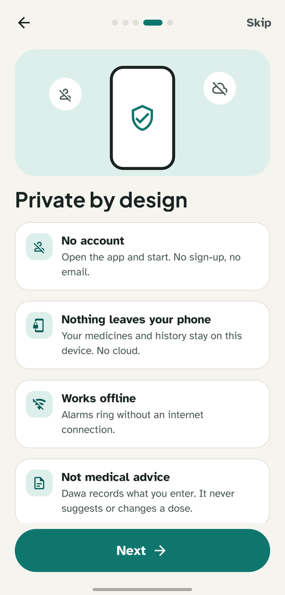
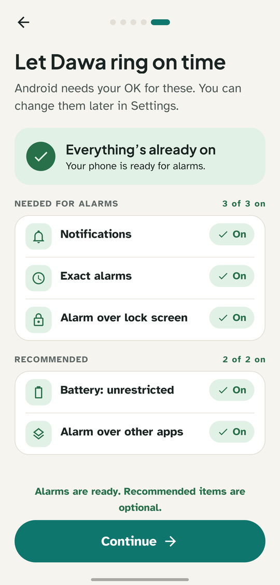
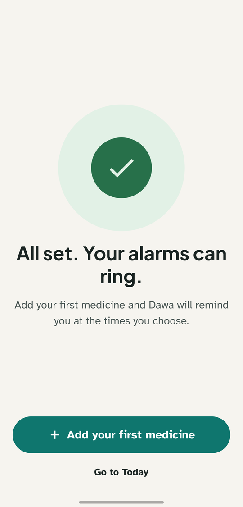
Install in a minute
Dawa2 isn't on Google Play. Download the APK and install it directly.
Dawa2 for Android
The latest version, ready to install.
Download for Android- Version
- Latest
- Size
- ~37 MB
- Requires
- Android 7.0+
What's new in
SHA-256:
Download the APK
Tap Download on your Android phone. The file is called dawa2.apk.
Allow the install
Open the file. If Android asks, allow installing apps from your browser or file manager.
Open Dawa2
A short first-launch guide shows how the alarm works, then turns on what alarms need, one tap each: notifications, exact alarms and the alarm over the lock screen. “Battery: unrestricted” and “Alarm over other apps” are optional but recommended.
Google Play Protect may warn about an unrecognized app. That's expected, because Dawa2 isn't on Google Play. Tap “More details” › “Install anyway”. New versions install over the old one and keep your data.
Private by design
Your medicines are nobody else's business. Dawa2 has no servers to send them to: everything stays on your phone.
Read the privacy policy- No account and no sign-up
- No servers, cloud sync, analytics or ads
- Medicines and history stay on your phone
- Backups and exports only when you make them, and only where you send them
Questions
Is Dawa2 free?
Yes. No ads, no subscriptions and no in-app purchases.
Does it need the internet?
No. Dawa2 works fully offline and its own code makes no network requests.
How do I move to a new phone?
Use Settings › Back up everything and keep the file somewhere safe, then restore it on the new phone. Android's automatic backup is off, so uninstalling the app deletes your data.
Does Dawa2 give medical advice?
No. It records exactly what you enter and never suggests or changes doses.
Which phones are supported?
Android 7.0 or later on a 64-bit (arm64) phone, which covers almost every phone from recent years. Some brands hold apps back in the background; turning on “Battery: unrestricted” keeps alarms on time.
Why does an alarm show only as a banner?
While you use your phone, Android shows alarms as a banner unless the app may display over other apps. Allow “Alarm over other apps” in Settings › Alarm readiness, and alarms take the whole screen.